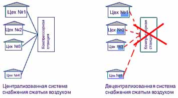

Статья. Энергосбережение в производстве сжатого воздуха: централизованная и децентрализованная схемы
Статья. Энергосбережение в производстве сжатого воздуха: централизованная и децентрализованная схемы
Энергосбережение является одной из важнейших задач, стоящих перед современным производством. Каждый лишний киловатт-час электроэнергии тяжелым грузом ложится на себестоимость продукции, приводя к снижению конкурентоспособности предприятия.
При этом в балансе электропотребления производств доля компрессорных станций достигает 25-30 %, в связи с чем энергосберегающие мероприятия в этой области приобретают достаточно важное значение. Опыт показывает, что эффективность систем производства и распределения сжатого воздуха на большинстве российских предприятий весьма низкая. Это связано с изношенностью сетей распределения воздуха, несоответствием существующих сетей возлагаемым на них задачам, эксплуатацией компрессоров в неоптимальных режимах.
Техническими руководителями часто недооценивается значение правильного выбора схемы снабжения сжатым воздухом, и совершенно напрасно, поскольку часто именно здесь кроется причина повышенных затрат электроэнергии и частых поломок компрессорного оборудования. Ошибки здесь могут вылиться в необходимость дополнительных капиталовложений в будущем.
Существует два основных типа схем снабжения сжатым воздухом. Это централизованная и децентрализованная схемы. Схематично они изображены на рисунках (см.ниже).
Рассмотрим более подробно преимущества и недостатки данных схем.

Достоинства схемы:
1. Возможные выходы из строя отдельных компрессоров и проведение на них регламентных работ и плановых ремонтов не влияют на надежность воздухоснабжения предприятия в целом при наличии нескольких резервных компрессоров (как правило, однотипных).
2. Плановые ремонты могут производится в удобное время независимо от величины загрузки компрессорной станции (при наличии резерва).
3. Поскольку все компрессорное оборудование находится в одном месте, количество обслуживающего персонала невелико.
Недостатки такой системы:
1. Большая протяженность трубопроводов приводит к потерям давления (15 % и выше).
2. Состояние существующих на предприятиях централизованных пневмомагистралей, как правило, достаточно старых, часто оставляет желать лучшего, велики утечки, газодинамическое сопротивление повышено за счет наличия трудноопределимых местных сопротивлений. Сочетание первого и второго факторов дает суммарные потери, которые в отдельных случаях составляют до 50 %.
3. Высокая инерционность системы – поскольку запуск и останов крупных компрессоров требует времени, система не может быстро реагировать на изменения потребного количества сжатого воздуха.
4. В зимнее время возможно обмерзание внутренних поверхностей участков магистралей, проходящих на открытом воздухе.
5. При работе в выходные дни или ночные смены, как правило, работают лишь отдельные цеха предприятия, для питания которых используются компрессоры высокой производительности. Их эксплуатация экономически нецелесообразна, т. к. потребность в сжатом воздухе зачастую реально значительно ниже производительности компрессоров.
6. Из-за плановых ремонтов компрессоров возникает необходимость наличия резерва.
7. Высокая инерционность системы – поскольку запуск и останов крупных компрессоров требует времени, система не может быстро реагировать на изменения потребного количества сжатого воздуха.
8. Некоторые потребители могут требовать более высокого давления воздуха, что приводит к необходимости поддержания более высокого давления в сети, что приводит к дополнительным потерям мощности.
9. В результате неравномерной загрузки предприятия появляются проблемы в эксплуатации центробежных компрессоров, которые рассчитаны практически на круглосуточный режим работы с максимальным количеством пусков в год не более 50. Руководство предприятия становится перед дилеммой – либо увеличение затрат на электроэнергию, либо увеличение количества ремонтов оборудования.
10. Система достаточно дорога в изготовлении.
11. Требуется наличие квалифицированного обслуживающего персонала.
Недостатки п.5,7,9 устранимы при внедрении систем управления группой компрессоров, например, BOGE airtelligence. Обеспечивающей максимальную оптимизацию и экономию электроэнергии при работе группы до 16 компрессоров.
Airtelligence разработан для идеального управления каждым компрессором в группе компрессоров и максимального приближения производства сжатого воздуха к его потреблению. Более того, airtelligence интеллектуально прогнозирует дополнительное увеличение или сокращение потребления сжатого воздуха и автоматически изменяет приоритеты для оптимизации комбинации компрессоров, работающих в определенное время. Такая функция сокращает время холостого хода и лишние пуски и способствует значительной экономии электроэнергии, практически исключая обходящееся слишком дорого время холостого хода.
Децентрализованная система: питание потребителей сжатым воздухом осуществляется отдельными небольшими компрессорами, устанавливаемыми непосредственно возле потребителя. Необходимо отметить, что в децентрализованных схемах при локальной потребности в воздухе более 1 м3/мин (с давлением 8-13 бар) целесообразно использование винтовых компрессоров, преимущества которых широко известны.
Достоинства схемы:
1. Уменьшается протяженность трубопроводов, что снижает газодинамические потери.
2. Стоимость системы значительно ниже, чем в случае централизованной.
3. Задача воздухоснабжения удаленных производственных участков решается значительно проще, чем при централизованной схеме – не требуется тянуть участки магистрали на значительные расстояния.
4. Для каждого потребителя может быть установлен компрессор с необходимым давлением (крайне важно для сетей с различными рабочими давлениями потребителей).
5. Для каждого потребителя может быть подобран компрессор с необходимой производительностью, что снижает энергозатраты.
6. Обмерзание исключается, поскольку трубопроводы не выходят за пределы цеха, где установлен компрессор.
7. Снижаются затраты на содержание сжатого воздуха, т.к. отпадает необходимость в теплоизоляции, герметизации, ремонте и обслуживании трубопроводов.
8. Небольшие компрессоры не требуют фундаментов, что упрощает и удешевляет их установку и пусконаладку.
9. Отпадает необходимость в специальном обслуживающем персонале, т. к. небольшие винтовые компрессоры не требуют плановых ремонтов, а все работы по техническому обслуживанию (замена масла, фильтров) могут проводиться людьми, не имеющими специальной подготовки.
10. Небольшие компрессоры могут комплектоваться ресиверами небольшого объема, не подлежащими регистрации в органах Ростехнадзора.
Недостатки такой системы:
1. Резервирование относительно затруднено, поскольку требует дублирования компрессорного оборудования на ответственных участках. Стоимость компрессорного оборудования может оказаться несколько выше, чем при централизованной системе.
2. При установке компрессора непосредственно в производственном помещении возникает шум, являющийся опасным фактором для персонала.
3. Система плохо приспособлена к возможному резкому возрастанию потребности в воздухе на конкретном участке (например, при установке дополнительных потребителей) – мало того, что потребуется замена компрессора на более мощный или установка дополнительного, сечение локальной магистрали может оказаться недостаточным.
В общем и целом, выбор оптимальной схемы воздухоснабжения зависит от конкретных условий на конкретном предприятии, ему обязательно должен предшествовать полный анализ ситуации, существующих пневматических линий, энергоаудит всей цепочки производства и подачи сжатого воздуха, с учетом необходимых капитальных вложений и постоянных затрат. Децентрализованная схема отнюдь не является универсальным решением, применение ее должно быть экономически обосновано. При проектировании пневматических систем необходимо учитывать не только потребителей, имеющихся в наличии в настоящее время, но и возможные варианты изменения как необходимого количества сжатого воздуха, так и расположения точек потребления.
Говоря об энергосбережении, нельзя не упомянуть о компрессорах с регулируемой частотой вращения вала электродвигателя, которым в последнее время все больше потребителей отдают предпочтение. Преимущество состоит в том, что его производительность изменяется в соответствии с изменением потребности в воздухе. При этом пропорционально изменяется потребляемая мощность, как правило, в диапазоне от 25 до 100 %. Компрессор с фиксированной производительностью работает в диапазоне между давлением включения (рабочее давление сети) и давлением отключения/перехода на холостой ход (выше рабочего на 1 бар); фактически компрессор всегда работает на давлении выше рабочего, что приводит к потерям энергии. При частотном регулировании давление поддерживается на постоянном уровне, а потому нет соответствующего перерасхода энергии. Стоит такой компрессор приблизительно на 50-80% дороже обычного, однако разница в стоимости компенсируется снижением эксплуатационных затрат. Рассмотрим это на примере.
Компрессор мощностью 75 кВт при двухсменной работе потребляет за год (6000 часов работы, при производстве воздуха 80% это будет 4800 часов под нагрузкой плюс в среднем 800 часов на холостом ходу) порядка 380 000 кВт*ч. При стоимости электроэнергии 1,80 руб/кВт*ч за год это составит 684 000 руб. Реальная экономия электроэнергии при применении частотного регулирования (применительно к компрессорам BOGE Kompressoren), как показывает опыт, составляет от 15 до 50 %. В денежном выражении это будет 102 600 – 342 000 руб. Цена компрессора BOGE S 100-2 (75 кВт, 12.1 м3/куб при 8 бар) составляет 1 197 135 руб. Такой же компрессор с регулированием частоты вращения, BOGE SF 100-2, стоит 1 563 990 руб., разница – 366 855 руб.. Таким образом, применение частотного регулирования окупится через 1 - 3,5 года, после этого начнется реальная экономия средств. При трехсменной работе этот срок сократится соответственно на треть Отсюда следует, что при минимальном пробеге до капитального ремонта не менее 125 000 часов применение частотного регулирования экономически оправдано в любом случае, вопрос только в том, готово ли предприятие произвести дополнительные капиталовложения, которые дадут в будущем существенную экономию. Не надо также забывать о том, что при частотном регулировании компрессорная установка работает в гораздо более благоприятных условиях (плавный пуск и останов, отсутствие резких скачков тока и т.д.), что увеличивает межремонтные интервалы и дает дополнительную экономию.
Компрессоры с частотным регулированием могут применяться как в децентрализованной системе воздухоснабжения (в случае, когда потребность в воздухе на конкретном участке может изменяться в значительных пределах), так и в централизованной (в этом случае целесообразно установить несколько компрессоров с фиксированной производительностью и один компрессор с частотным регулированием, который будет компенсирующим звеном).